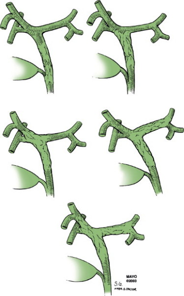
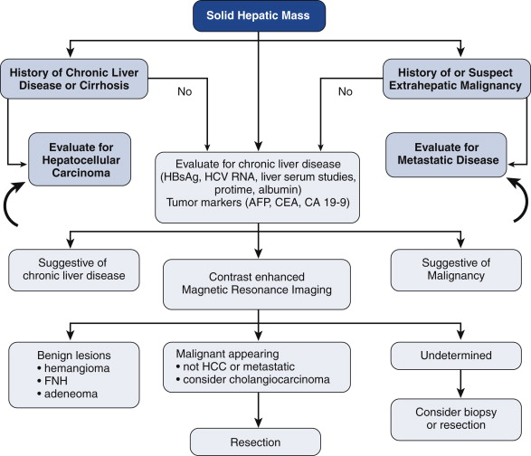

Cholangiocarcinoma
DEFINITION
Bile duct cancer.
top D I A B M
I M home
INCIDENCE
Rare.
M>F.
>60 usually.
Geography
South East Asia more commonly.
Risk Factors
Agents causing chronic duct inflammation
Environmental: biliary tract carcinogens such as rubber,
working in automotive plants.
Comorbidities: sclerosing cholangitis, choledochal cysts,
chronic salmonella typhi infx, Helminth infections of the biliary
tree.
top D I A B M
I M home
AETIOLOGY
Tumour - malignant.
Adenocarcinoma.
top D I A B M
I M home
BIOLOGICAL BEHAVIOUR
Pathophysiology
65% extrahepatic
- Of these, 65% perihilar ("Klatskin Tumours"); 20-25%
periampullary; 5% diffuse.
Bismuth-Corelette Classification System
(For Perihilar disease)

I = distal to confluence
II = at jx of ducts
III = confluence and right (A) or left (B) ducts
IV = includes both ducts to segmental bile ducts
Pathology
Morphologically classified as sclerosing, nodular, and papillary
(<10%.
- 90% sclerosing having an intense desmoplastic
reaction.
- (this feature makes diagnosis and surgery difficult)
If it distal end, often more papillary, and better prognosis
- more easily resected
Nodular and sclerosing types aggressively infiltrate periductal
tissue
- invade perineural sheaths, grow along nerves
--> unrecognised microscopic disease outside epicentre of tumour;
often unresectable or positive margins.
Also, grow subepithelially within duct a long way, 1-2cm
- typically under-estimated by imaging
Natural History
Highly aggressive tumour.
- 50% have nodal disease at positive.
Usually around 4cm in diameter at presentation.
Locally invasive; Invades locally - vessels, nerves, liver.
- vascular occlusion frequently leads to segmental liver atrophy.
Prognosis
3 year survival 30% at best.
Distal tumours probably have a better survival rate.
top D I A B M
I M home
MANIFESTATIONS
IHC often presents incidentally or discovered on Ix for mild LFT
derangements.
Symptoms
Local
Deep seated, vaguely localised RUQ pain.
Systemic
Weight loss, fatigue, malaise.
Jaundice (obstructive, so clay-coloured stools, tea-coloured urine),
itch.
Signs
Palpate
Possibly hepatomegaly and a palpable mass in RUQ.
top D I A B M
I M home
INVESTIGATIONS
Diagnosis often follows normal work-up for obstructive biliary
disease if distal.
Also can present with diagnosis of solid liver mass if intrahepatic.

IHC
USS or CT may reveal undefined liver mass.
- contrast MRI recommended.
--> shows nature of lesion and malignant features
--> can help differentiate between haemangioma or FNH etc.
--> is probably superior to CT for specificity and also for
pancreas (possible primary site).
If MRI consistent with malignancy
- keep looking for metastatic source;
--> CT chest, upper and lower endoscopy, and mammography
- consideration for PET also reasonable to rule out other primary
occult lesions and minimize nontherapeutic resections.
--> growing evidence for utility of pre-op PET/CT.
Distal / Hilar
MRCP preferred.
- allows evaluation of ampullary, HOP anatomy, ducts etc.
Definitive diagnosis short of resections is virtually impossible.
Biopsy?
No.
Rarely definitive and may seed tract.
Bloods
LFTs, Platelets, INR, albumin, CEA, CA 19-9, AFP
Hepatitis screen.
- tumor markers rarely specific, but may be useful for surveillance.
Staging
T1 = solid tumour, no vascular invasion
T2 = solitary with vascular invasion; or multiple tumours <5cm
T3 = multiple tumours >5cm; or major vascular involvement
T4 = direct invasion of adjacent organ (not GB) or perforation or
visceral peritoneum
N1 = regional nodes
M1 = distant mets
Correlates with resectability and survival.
Special note for Hilar Disease
Staging system supplemented by Bismuth-Corlette classification.
And Modified system specific to hilar disease:
T1 = involves biliary confluence +/- extension into radicles.
T2 = T1 tumours and ipsilateral portal vein involvement +/-
ipsilateral hepatic lobar atrophy
T3 = Involves confluence with bilateral extension into radicles, or
otherwise more extensive than above.
top D I A B M
I M home
MANAGEMENT
MDT
Surgical Evaluation
IHC
Assess for resectability.
- anatomy from imaging
- depends on size, proximity to major structures.
- segmental resections or major anatomical resections
- achievability depends on inflow, outflow, biliary drainage, and
remnant size.
- radiographic assessment of future liver remnant (more reliable
than in HCC as liver us. not diseased).
--> if FLR too small, portal vein embolization to allow
hypertrophy.
Confirm absence of extrahepatic disease
Assess for operative tolerance.
Distal
Define absence of metastatic disease and vascular involvement.
Pre-op biliary stenting not essential, but most referred with stent
already in place.
Hilar
Decision to operate is definitely specialist territory:
complex.
- difference to a complete resection is usually millimeters,
critical as margin-+ve --> no benefit from surgery.
MRCP critical to anatomy.
CXR enough for lung mets.
Ideally would resect without biliary intervention
- but necessary sometimes if biliR > 10 mg/dL, unwell,
malnourished, needs optimization.
Operative
Start with laparoscopy
- changes management in 20-30% due to small liver or peritoneal
disease.
IHC
Operative therapy
- appropriate for fit patients with resectable disease.
- beware satellite lesions around the primary along paths of
invasion.
Distal
Whipple's if tumour is near or within pancreas
May need excision up to the porta
Formal portal lymphadenectomy needed above pancreas.
Hilar
Technically complex.
Aim is R0 resection and reconstruction.
May need en-bloc resection of bile duct compelx, skeletonization of
portal veins, hepatic arteries
Resection of hilum and lymph around common hepatic artery.
Right duct resected at parenchyma
Left duct after umbilical fissure
Advanced lesions require en-bloc hepatectomy as part of the
reconstruction.
- hepatectomy crucial for clear margins and survival.
Roux-en-Y reconstruction.
- multiple ducts can be joined together first if possible.
Resectability rates are 60-70%
Adjuvant therapy
No good data to guide adjuvant therapies; undefined
But recommended for all resections based on uncontrolled trials.
Unresectable disease
Liver transplant has been trialled.
- not recommendable; no good data to support this.
Prognosis
5-year survival for R0 resections is 15-40%
- LN involvement important to prognosis.
Most die of recurrence, less commonly due to lung, liver,
bone mets.
Those who are not resectable are usually dead within 1 yr.
Palliation
Various agents trialled, none improve survival beyond 8-15m
For palliative biliary obstruction, stenting
May need biliary drainage by PTC.
- 25-30% at least of functioning liver needs drainage to be
effective.
ChemoRadiotherapy - little evidence but widely done based on
uncontrolled data.
Photodynamic therapy
- given porphyrin; retained in cancer cells longer than normal
- activated with a specific light wavelength by cholangioscopy
--> reactive oxygen species released
--> RCT evidence.
top D I A B M
I M home